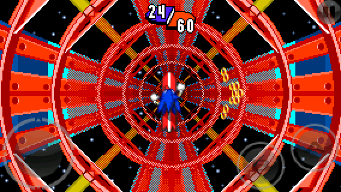
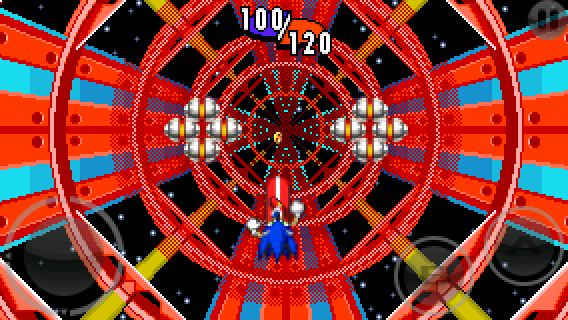
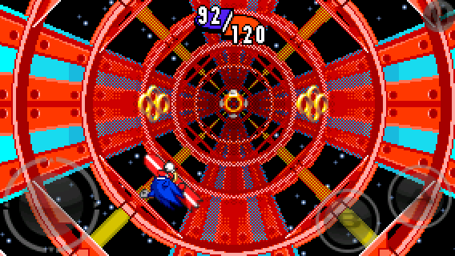
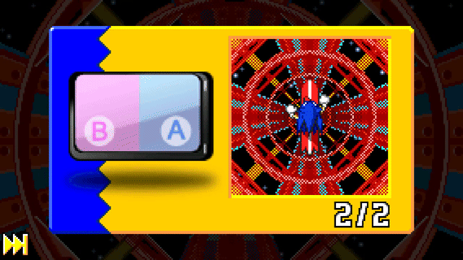
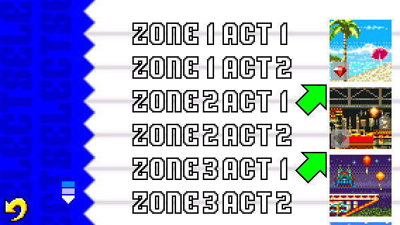

Special Stages
Special Springs

Special Stages can be accessed by jumping on Special Springs. There is a total of 7 Special Stages in the game.
To jump on a Special Spring, you need to search for them first in some acts.
You can check the hints for each Special Spring location in the Tips & Hints menu. Each hint contain steps to follow in order to find the Special Springs.
Objective

Each Special Stage contains 2 segments.
Collect the required number of rings before the end of each segment to earn a Chaos Emerald.

Be careful not to touch the bombs. You lose 10 rings anytime to touch one.

You will also encounter bumpers that makes you bump to the direction you need to go, or makes you bump backwards to catch more rings.
Abilities

Press the A button to speed up. This allows you to go fast and go through narrow gaps between bombs.

Press the B button to perform a trick move. This is useful to collect rings in wider ranges.
Press the B button right after touching the yellow round void and you will collect 12 additional rings.
Gyroscope Controls

If you set the Special Stages Controls to GYROSCOPE, you can move the character by tilting your device in any direction.
The movement speed is based on the Gyroscope Level (LOW, MEDIUM or HIGH).

Additionally, pressing the right half of the screen makes you speed up, and pressing the left half of the screen makes you perform a trick move.
Progression

After clearing a Special Stage, an icon will appear on the zone image in the Act Select menu.
If you have failed a Special Stage, that icon becomes blank.
Collect all 7 Chaos Emeralds to access the Moon Zone by clearing the X-Zone as Sonic.